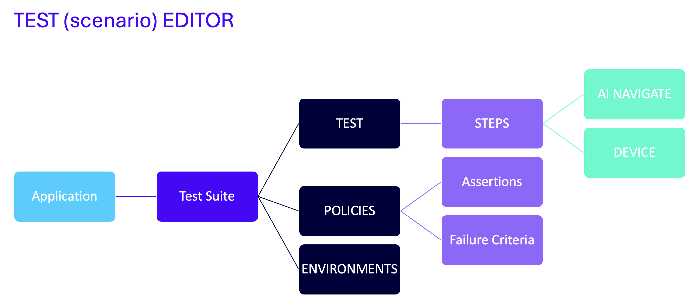

AI Test Studio
A new unified testing UI driving a fundamental shift in software testing — from fragmented, skill‑dependent processes to an AI‑driven, autonomous testing fabric that unifies functional, performance, UX, accessibility and API testing into a single workflow. It embodies the next evolution of Perforce’s AI‑driven “shift‑left” testing vision.
The product & my involvement
The product belongs under the testing application unit in Perforce — a company founded in 1995 and headquartered in Minneapolis, Minnesota. I was part of the complete process of designing this product, from ideation to a real product.
I spent a lot of time doing user research, designing, and having discussions with stakeholders and other team members. The team — product owner, engineers and product designers — was spread across the Czech Republic, India and the USA, working closely with many rounds of feedback and iteration under Scrum.
Why it matters
Testing can be tough for beginners or for users who don’t know how to write tests. AI Test Studio helps by using AI to remove these obstacles.
Another problem is having multiple variants of one test. In AI Test Studio a user can define a test just once as a single source of truth and then generate different types of tests from it — for example performance and functional tests.
Business goals
Involve more junior testers — with the help of AI, let them define a test as a single source of truth in one place.
Grow adoption — by connecting AI Test Studio with BlazeMeter and Perfecto, increasing licence sales of those products.
User needs & personas
A junior tester should be able to write tests with the help of AI.
Personas: a junior tester who can’t write tests but understands how testing works, and an engineer who needs to test their application.
Information architecture
There are many different entities in this project — suites, test scenarios, environments, policies. It was important to define a solid information architecture. The research method was interviews with internal stakeholders.

User flows
User flows capture the main paths through the application. We chose two primary flows: the new user and the existing user.


Wireframes
Wireframes are quick sketches to understand what each screen should contain and how the flow looks. There were a lot of iterations before the team agreed on the basic flow.


Design system
We chose the Force Design System — a well‑prepared system containing all the necessary elements: colour variables, typography, spacing and UI components. (This very portfolio is built with Force DS tokens.)
High‑fidelity prototype
All screens were designed in Figma and presented as a clickable prototype, giving stakeholders the impression of a real application.


AI in the design process
Figma Make is a great tool for ideation and quick prototyping. Figma Make — and later Claude — became an important part of the design process.
User testing
The product is continuously tested with internal participants. We established a Slack channel for gathering internal feedback on the application.